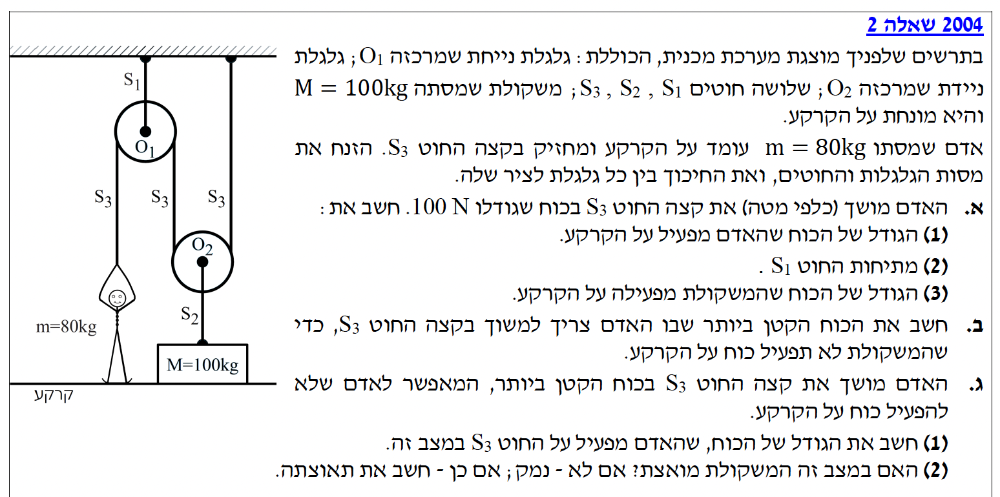
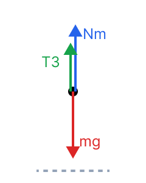
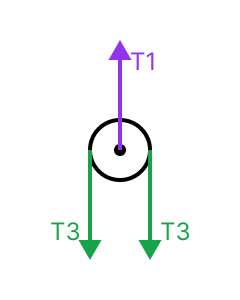
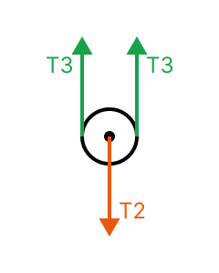
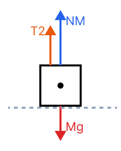

לפני שניגש לסעיפים, נבין את מבנה המערכת ונגדיר ציר ייחוס. אנו נבחר את ציר ה-\( y \) ככיוון חיובי כלפי מעלה. תאוצת הכובד נלקחת תמיד בערכה המוחלט \( g = 10 \text{ m/s}^2 \), וכוח הכובד יפעל בכיוון השלילי (\( -mg \)).
החוט \( S_3 \) הוא חוט יחיד ורציף שעובר דרך גלגלות אידיאליות, ולכן המתיחות בו \( T_3 \) קבועה לכל אורכו. כמו כן, כל הנתונים בשאלה מסופקים ביחידות התקניות (MKS): מסות ב-\( \text{kg} \), כוחות ב-\( \text{N} \), ולכן אין צורך בהמרת יחידות (שלב 0).




מסת האדם \( m = 80 \text{ kg} \). מסת המשקולת \( M = 100 \text{ kg} \). האדם מושך את החוט \( S_3 \) בכוח שמייצר מתיחות של \( T_3 = 100 \text{ N} \). בשלב זה כל המערכת במנוחה.
בסעיף (1) אנו מחפשים את הגודל של הכוח שהאדם מפעיל על הקרקע. בסעיף (2) נחפש את המתיחות בחוט \( S_1 \), כלומר \( T_1 \). בסעיף (3) נחפש את גודל הכוח שהמשקולת \( M \) מפעילה על הקרקע.
מהדף הרשמי נשתמש בחוק השני של ניוטון עבור מצב התמדה (מנוחה) ובנוסחת כוח הכובד:
(1) כוח על הקרקע מהאדם: לפי החוק השלישי של ניוטון, הכוח שהאדם מפעיל על הקרקע שווה בגודלו לכוח הנורמל \( N_m \) שהקרקע מפעילה על האדם כלפי מעלה. נרשום את משוואת הכוחות על האדם (שנמצא במנוחה, ולכן התאוצה היא אפס):
\[ \Sigma F_y = m a \Rightarrow N_m + T_3 - mg = 0 \]נציב את הנתונים כדי לבודד את הנורמל:
\[ N_m = mg - T_3 = 80 \cdot 10 - 100 = 800 - 100 = 700 \text{ N} \](2) מתיחות החוט \( S_1 \): נסתכל על הגלגלת העליונה \( O_1 \). המסה שלה זניחה (ולכן המשוואה היא פשוט שיווי משקל כוחות). פועל עליה הכוח \( T_1 \) כלפי מעלה, ופעמיים הכוח \( T_3 \) כלפי מטה (משני צידי הגלגלת):
\[ \Sigma F_y = 0 \Rightarrow T_1 - 2T_3 = 0 \] \[ T_1 = 2T_3 = 2 \cdot 100 = 200 \text{ N} \](3) כוח על הקרקע מהמשקולת: בדומה לאדם, הכוח שהמשקולת מפעילה על הקרקע שווה לנורמל \( N_M \). תחילה נמצא את המתיחות \( T_2 \). נסתכל על הגלגלת התחתונה \( O_2 \), המושכת את החוט \( S_2 \) כלפי מעלה ומחוברת לשני צידי \( S_3 \):
\[ \Sigma F_y = 0 \Rightarrow 2T_3 - T_2 = 0 \Rightarrow T_2 = 2T_3 = 200 \text{ N} \]כעת נרשום משוואת כוחות עבור המשקולת \( M \):
\[ \Sigma F_y = 0 \Rightarrow N_M + T_2 - Mg = 0 \] \[ N_M = Mg - T_2 = 100 \cdot 10 - 200 = 1000 - 200 = 800 \text{ N} \]אנו מחפשים כעת את מצב הסף שבו המשקולת \( M \) מפסיקה להפעיל כוח על הקרקע, משמע שהקרקע כבר אינה תומכת בה ולכן הכוח הנורמלי מתאפס, כלומר מתקיים התנאי הפיזיקלי \( N_M = 0 \).
את המתיחות המינימלית \( T_3 \) בחוט שהאדם מפעיל כדי לקיים את התנאי הנ"ל.
נשתמש באותן משוואות כוחות (החוק השני של ניוטון ללא תאוצה) מאחר ומדובר במצב סף של מנוחה לפני תנועה:
נחזור למשוואת הכוחות של המשקולת, אך הפעם נציב \( N_M = 0 \):
\[ N_M + T_2 - Mg = 0 \Rightarrow 0 + T_2 - Mg = 0 \Rightarrow T_2 = Mg = 100 \cdot 10 = 1000 \text{ N} \]כדי שהחוט \( S_2 \) יפעיל כוח של \( 1000 \text{ N} \), נבדוק מה נדרש להיות הכוח \( T_3 \) דרך משוואת הגלגלת התחתונה \( O_2 \):
\[ 2T_3 - T_2 = 0 \Rightarrow 2T_3 = 1000 \Rightarrow T_3 = 500 \text{ N} \]נוודא שהאדם מסוגל להפעיל כוח זה מבלי להתנתק בעצמו מהקרקע (על ידי בדיקה ש-\( N_m \ge 0 \)):
\[ N_m = mg - T_3 = 800 - 500 = 300 \text{ N} \]היות ו-\( N_m \) חיובי, האדם נשאר יציב על הקרקע.
האדם מושך את החוט \( S_3 \) בכוח המקסימלי (הגדול ביותר) האפשרי עבורו מבלי שהוא עצמו יתנתק מהקרקע. משמעות הדבר היא שכעת הנורמל של האדם מתאפס, כלומר \( N_m = 0 \).
בסעיף (1) נחפש את גודל הכוח \( T_3 \) המופעל במצב זה. בסעיף (2) נשאל האם המשקולת מואצת, ואם כן נחפש את גודל התאוצה \( a \) שלה וכיוונה.
נחזור להשתמש בחוק השני של ניוטון עבור גוף שמאיץ:
(1) חישוב המתיחות החדשה: נשתמש במשוואת הכוחות של האדם במצב בו הוא על סף ניתוק (\( N_m = 0 \)):
\[ N_m + T_3 - mg = 0 \Rightarrow 0 + T_3 - 800 = 0 \Rightarrow T_3 = 800 \text{ N} \](2) תאוצת המשקולת: נבדוק את הכוחות הפועלים כעת על המשקולת \( M \). המתיחות בחוט \( S_2 \) המושכת את המשקולת כלפי מעלה תלויה ב-\( T_3 \):
\[ T_2 = 2T_3 = 2 \cdot 800 = 1600 \text{ N} \]כוח הכובד הפועל על המשקולת כלפי מטה הוא \( Mg = 100 \cdot 10 = 1000 \text{ N} \). מכיוון שהכוח כלפי מעלה עולה על כוח הכובד מטה (\( 1600 > 1000 \)), המשקולת בוודאות מואצת כלפי מעלה. נרשום את החוק השני של ניוטון למשקולת למציאת התאוצה \( a \):
\[ \Sigma F_y = M a \Rightarrow T_2 - Mg = M a \] \[ 1600 - 1000 = 100 \cdot a \] \[ 600 = 100 a \Rightarrow a = \frac{600}{100} = 6 \text{ m/s}^2 \]